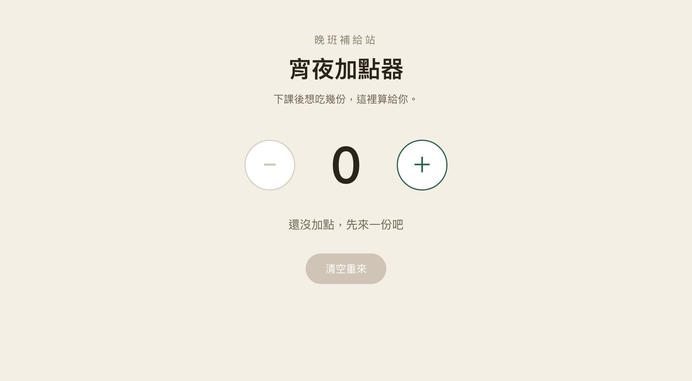
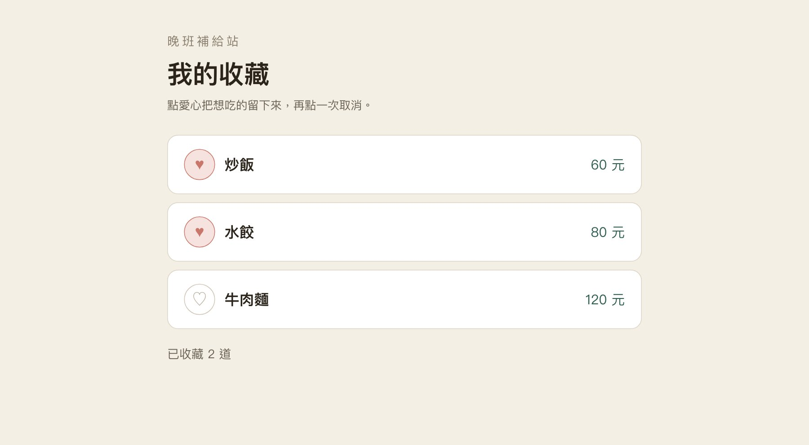
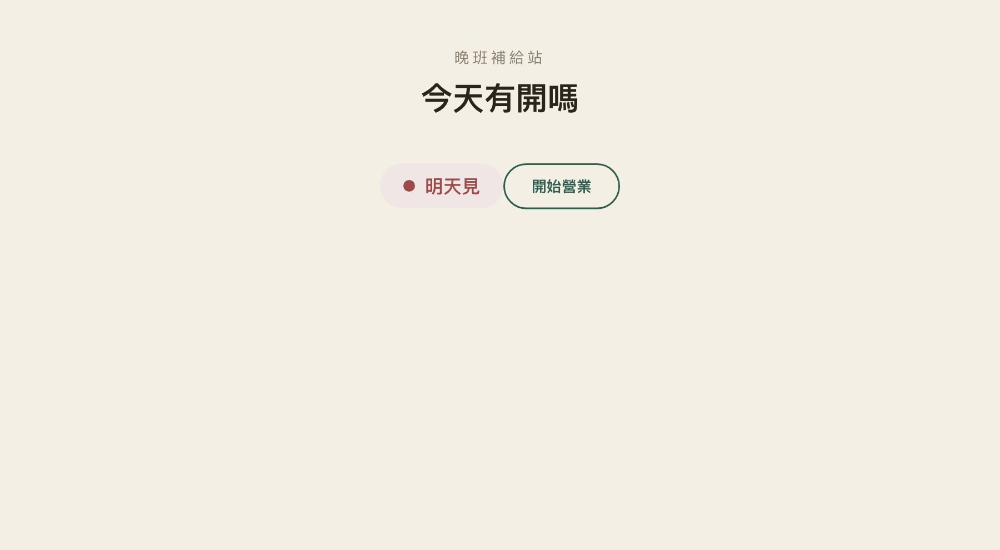
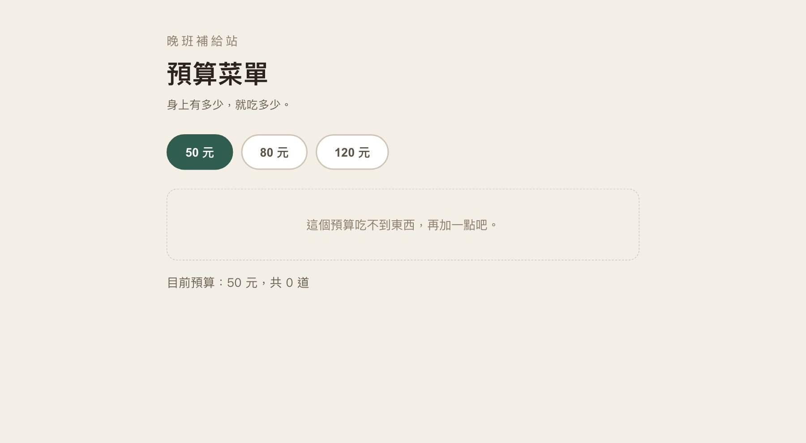
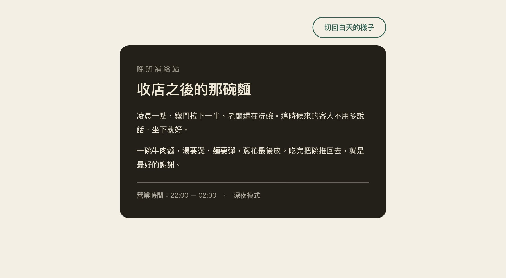
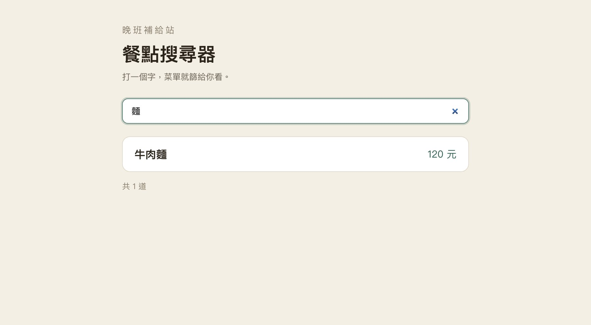
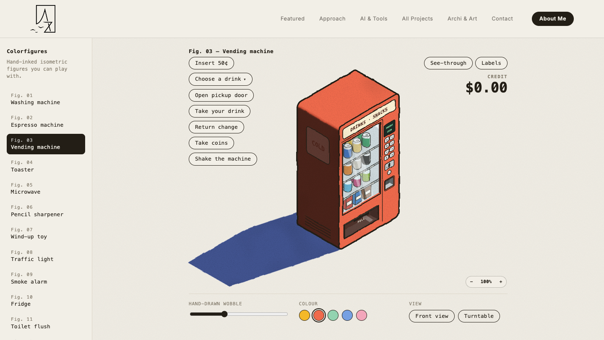
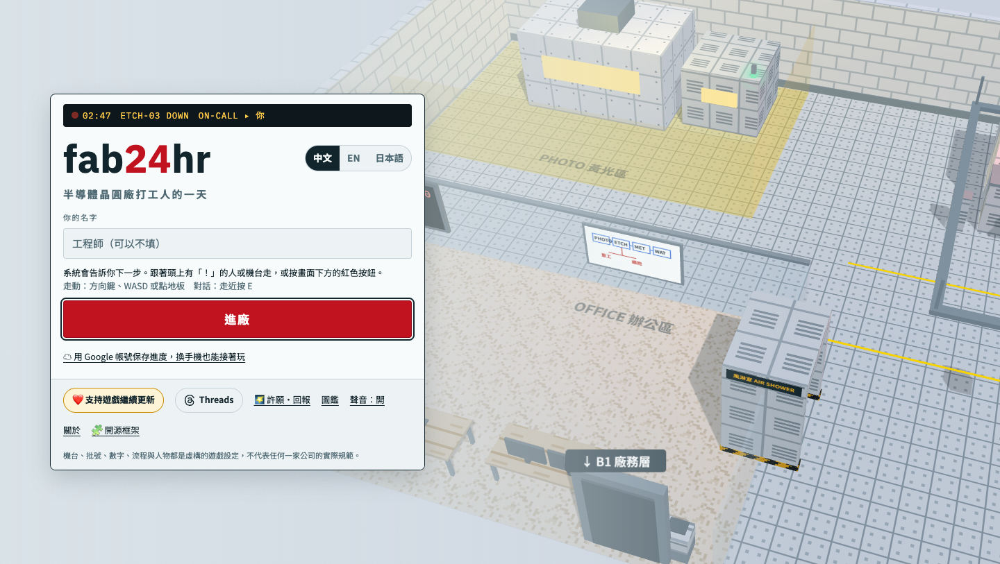

CH7 · Angular 互動入門
Angular 互動入門：下課後的宵夜地圖
用 signal 管資料、用 @if／@for 排畫面，做一張會動的宵夜菜單

CH7 · 02
02/62
下課後，誰決定吃什麼
下課十點半，站在騎樓下，手機裡有五家店——你先看價格，還是先看還開著沒？
- 這張菜單會做三件事：依預算篩選、看店家開沒開、把想吃的收藏起來。
- 全部用本機的三筆資料，不需要後端、不需要帳號。
- 做完可以給同學操作，這就是本週的成果。

CH7 · 03
03/62
投票：80 元能吃什麼
同樣三筆資料，預算換了，留下的卡片就換了。
- 預算 50 元：三筆都超過，畫面應該顯示「吃不到」。
- 預算 80 元：炒飯 60、水餃 80 留下，牛肉麵 120 出局。
- 預算 120 元：三筆全部留下。
- 條件不同、結果不同——這就是「資料驅動畫面」。
CH7 · 04
04/62
今天帶走一張會動的菜單
今晚只要求三件事，做到就有一張能展示的菜單。
- 改得動：把店名、餐名、價格換成你自己的。
- 會互動：加點、重設、營業切換至少一個真的能用。
- 帶得走：關掉分頁再打開，修改還在。
- 六題是選做，不是作業；先完成主做的加點器。
CH7 · 05
05/62
元件怎麼被 App 使用
預設的 App 已經是根元件；新增 MealCard 後，要讓 App 認得它、再把它放進模板。
- App：原本就存在，bootstrapApplication(App) 保持不動。
- MealCard：新增的子元件，不會因為建立完成就自己出現在畫面。
- 概念先記三步：import → imports 註冊 → selector 放進模板；下一頁再實際操作。
CH7 · 06
06/62
跟著做：新增並使用 MealCard
現在才開始操作：用 Angular CLI 建立 MealCard，再把它接進既有 App。
- 先做 ①②：確認 CLI 真的建立 src/app/meal-card/，而且 main.ts 找得到 MealCard。
- 再做 ③④：註冊後把 selector 放進模板，看到畫面才算接成功。
- 原本的 App 與 bootstrapApplication(App) 都不用重建、也不用搬動。
CH7 · 07
07/62
從上週的 JS 搬過來
上週你用 textContent 改畫面；這週同一件事，換 Angular 幫你記住。
- 上週：抓元素 → 改 textContent → 自己記得哪裡要更新。
- 這週：宣告資料 → 模板寫 {{ }} → 資料變了畫面自己變。
- 事件、資料、畫面三站沒變，變的是「誰負責更新」。
- 你不用再 querySelector，也不用記得同步幾個地方。
let count = 0;
btn.onclick = () => {
count = count + 1;
num.textContent = count;
};count = signal(0);
add() {
this.count.set(this.count() + 1);
}CH7 · 08
08/62
三個檔案各管一件事
一個元件通常就三個檔案，各管一件事。
- app.ts：資料與行為（signal、方法）。
- app.html：畫面結構（標籤、{{ }}、@if、@for）。
- app.css：外觀（顏色、間距、字級）。
- main.ts 只負責啟動 App；前面接好後，本週不用再改。
<!-- app.html：畫面結構 -->
<h1>{{ shopName }}</h1>
<p>{{ price }} 元</p>/* app.css：外觀 */
h1 { font-size: 40px; }
.price { color: #2f5d50; }// app.ts：資料與方法
export class App {
shopName = '晚班補給站';
price = 80;
}CH7 · 09
09/62
保存不是留著分頁
分頁關掉就沒了。今晚離開前一定要做一次「重開確認」。
- 有登入：按 Fork／Save 存成自己的副本，另開網址確認修改還在。
- 沒登入：下載專案 ZIP，存到自己的雲端，確認檔案真的在。
- 只留著分頁、截圖、教室電腦，都不算保存。
- 下週有獨立起始專案，不會因為這週沒存好就接不上。
01 / 06
元件與模板
把一整頁拆成可命名的積木，再讓資料流進模板。
CH7 · 11
11/62
把畫面拆成積木
一整頁看起來很複雜，其實是幾個可以命名的區塊疊起來。
- 頁首、菜單清單、單一餐點卡，各自是一個元件。
- 本週先操作最外層的 App；餐點卡留到下一週拆。
- 能命名的東西就能重複使用——三張卡不需要寫三次。
CH7 · 12
12/62
元件的三張工作單
一個元件由三份工作單組成：長什麼樣、有什麼資料、看起來如何。
- 模板（templateUrl）決定結構與要顯示哪些資料。
- 類別（class）放資料與方法。
- 樣式（styleUrl）只管外觀。
- 三份工作單合起來，才是一張看得到的卡片。
<!-- app.html -->
<h1>{{ shopName }}</h1>
<p>{{ price }} 元</p>/* app.css */
h1 { font-size: 40px; }@Component({
selector: 'app-root',
templateUrl: './app.html',
styleUrl: './app.css',
})
export class App {}CH7 · 13
13/62
自訂標籤從哪來
你在模板寫 <app-root>，瀏覽器其實不認識它——是 Angular 認識。
- @Component 的 selector 決定這個元件叫什麼標籤。
- 要用別人的元件，得在自己的 imports 裡登記。
- 看到「unknown element」的錯誤，通常就是忘了 import。
- 不用背裝飾器，先會找「這個標籤是誰提供的」。
CH7 · 14
14/62
插值：把資料放進句子
雙大括號是「把資料放到這裡」的意思。
- app.ts 宣告 shopName = '晚班補給站'。
- 模板寫 <h1>{{ shopName }}</h1>，畫面就出現那行字。
- 同一個資料可以在很多地方引用，改一次全部同步。
- 這就是插值：資料 → 文字。
<h1>{{ shopName }}</h1>
<p>今天想吃什麼？</p>export class App {
shopName = '晚班補給站';
}CH7 · 15
15/62
模板表達式：價格也是資料
價格也不該寫死；寫在資料裡，改一處全部跟著變。
- price = 80，模板寫 {{ price }} 元。
- 大括號裡可以是表達式：{{ price * 2 }}、{{ price > 100 ? '貴' : '可以' }}。
- 但別在模板裡塞一大段邏輯——超過一行就搬進方法或 computed。
<p>{{ price }} 元</p>
<p>{{ price * 2 }} 元（兩份）</p>
<p>{{ price > 100 ? '有點貴' : '可以' }}</p>export class App {
price = 80;
}CH7 · 16
16/62
文字與屬性是不同位置
文字放雙大括號，元素的「設定」放中括號。
- [disabled]="soldOut" 控制按鈕能不能按。
- [src]、[value]、[class.night] 都是同一種寫法。
- 注意：disabled="false" 還是「有這個屬性」，按鈕照樣禁用。
- 中括號代表「右邊是資料，不是字串」。
<!-- 屬性：放在標籤裡面 -->
<button [disabled]="soldOut">加點</button>
<!-- 文字：放在標籤中間 -->
<p>{{ soldOut ? '已售完' : '可以點' }}</p>export class App {
soldOut = true;
}CH7 · 17
17/62
樣式也能跟著狀態走
同一個區塊，白天和深夜只是換一組樣式。
- [class.night]="night()"：條件成立才掛上 night 這個 class。
- CSS 只負責 .night 的顏色，不管什麼時候該變。
- 狀態判斷留在程式，樣式留在 CSS，兩邊不要混。
- 除了顏色，也給文字提示——不能只靠顏色分辨狀態。
<article [class.night]="night()">
<h1>收店之後的那碗麵</h1>
</article>.night {
background: #232019;
color: #efe7d6;
}export class App {
night = signal(false);
}CH7 · 18
18/62
三種括號配對賽
三種括號各管一件事，配錯就是最常見的錯誤來源。
- {{ }} 插值：把值變成文字。
- [ ] 屬性綁定：把值交給元素的設定。
- ( ) 事件綁定：使用者做了什麼，呼叫哪個方法。
- 三個一起用：<button [disabled]="count() === 0" (click)="add()">{{ count() }}</button>。
02 / 06
事件與 signal
按鈕按下去之後，資料怎麼變、畫面怎麼跟上。
CH7 · 20
20/62
你指令，我接招
小括號裡放事件名稱，等號右邊放要做的事。
- <button (click)="add()">加一份</button>。
- 除了 click，還有 input、submit、keyup 等。
- 右邊通常是一個方法名稱，加上括號表示「呼叫它」。
- 寫成 (click)="add" 不會執行——少了括號就差很多。
<button (click)="add()">加一份</button>
<input (input)="query.set(...)">// (事件)="方法()"：左邊是誰觸發，右邊是叫誰做事CH7 · 21
21/62
函式是按鈕的動作單
方法寫在類別裡，按鈕只是「呼叫它」的開關。
- add() 寫在 App 類別裡，跟 signal 放在一起。
- 方法裡讀 signal 要加 this：this.count()。模板裡不用 this。
- 一個方法只做一件事，名字要說出它做什麼。
- 按鈕、輸入框、表單都能呼叫同一個方法。
<button (click)="add()">＋</button>
<span class="num">{{ count() }}</span>export class App {
count = signal(0);
add() {
this.count.set(this.count() + 1);
}
}CH7 · 22
22/62
找錯：按鈕怎麼沒反應
按了沒反應，九成是「名字接不上」。
- 模板寫 (click)="ad()"，方法卻叫 add()——差一個字母。
- 第二常見：方法忘了寫、或寫在別的類別裡。
- 第三：按鈕被別的透明元素蓋住（用開發者工具看得到）。
- 看錯誤訊息第一行，通常直接告訴你哪個名字找不到。
CH7 · 23
23/62
一份會通知畫面的資料
signal 是一個盒子：裡面裝值，變的時候會通知畫面。
- count = signal(0)：宣告一個裝 0 的盒子。
- 要記得 import { signal } from '@angular/core'。
- 它跟普通變數最大的差別：改值時畫面會知道。
- 類比取餐號碼牌——號碼一換，螢幕就跟著換。
<span class="num">{{ count() }}</span>import { Component, signal } from '@angular/core';
export class App {
count = signal(0);
}CH7 · 24
24/62
讀值要打開盒子
盒子不會自己變成數字，要打開它。
- count() 加括號才是「現在的值」。
- 模板寫 {{ count() }}；少了括號會印出函式本身。
- 在 ts 裡讀要加 this：this.count()。
- 看到畫面上出現 function 字樣，就是漏了括號。
<p>已加 {{ count() }} 份</p>
<!-- 少了括號：印出函式本身 -->
<p>已加 {{ count }} 份</p>// 讀值一定加括號
this.count()CH7 · 25
25/62
寫值用 set
改值不是 count = 1，而是呼叫 set。
- this.count.set(1)：直接換成 1。
- this.count.set(this.count() + 1)：先讀、再加、再寫回。
- 不能用 count++ 或 count = 1，signal 不會收到通知。
- set 之後，所有用到 count() 的地方一起更新。
<p>已加 {{ count() }} 份</p>add() {
// 先讀、再加、再寫回
this.count.set(this.count() + 1);
}CH7 · 26
26/62
重設也是一次更新
重設不是「清掉」，而是「再設一次 0」。
- reset() { this.count.set(0); }。
- 加三次 → 重設 → 再加一次，結果應該是 1，不是 4。
- 重設與加點是同一條路：都是改同一個 signal。
- 按鈕的 disabled 也跟著回到初始狀態。
<button (click)="reset()" [disabled]="count() === 0">
重設
</button>reset() {
this.count.set(0);
}CH7 · 27
27/62
事件如何變成畫面
一個互動就是四個站：點擊 → 方法 → 資料 → 模板。
- 使用者點「＋」：觸發 (click)。
- 呼叫 add()：方法執行。
- this.count.set(...)：資料改變。
- 模板的 {{ count() }} 重新算出文字，畫面更新。
- 四站都會了，剩下的功能只是換資料形狀。
CH7 · 28
28/62
@if：資料不同，畫面不同
有些內容，只有某種狀態下才該出現。
- @if (isOpen()) { ... }：條件成立才顯示裡面的內容。
- 不成立時，那段 HTML 根本不存在（不是隱藏）。
- 適合：營業才顯示的加點入口、有資料才顯示的清單。
- 不要用 CSS 的 display:none 假裝——資料層面就不該有它。
@if (isOpen()) {
<p>現在可以加點</p>
}export class App {
isOpen = signal(true);
}CH7 · 29
29/62
@else：替另一種狀態說句話
條件不成立時，也要給一句話，不要留空白。
- @if (isOpen()) { 營業中 } @else { 明天見 }。
- 打烊不是錯誤，是另一種正常狀態。
- 文字要說清楚，不能只把顏色變灰。
- 兩個分支都測過，才算做完。
@if (isOpen()) {
<p class="state open">營業中</p>
} @else {
<p class="state closed">明天見</p>
}// 打烊不是錯誤，是另一種正常狀態CH7 · 30
30/62
不要讓數量掉到負數
互動一定有邊界：0 份的時候，不該再減。
- [disabled]="count() === 0"：0 份時減號按不動。
- 方法裡也判斷 this.count() > 0，雙層保護。
- 只做其中一層，還是有機會出現 -1。
- 測法：0 → 減（不動）、1 → 減（變 0）、0 → 加（變 1）。
<button (click)="minus()"
[disabled]="count() === 0">−</button>minus() {
if (this.count() > 0) {
this.count.set(this.count() - 1);
}
}03 / 06
清單與篩選
三筆資料用同一段模板排出來，再依條件留下要的。
CH7 · 32
32/62
從一份餐點到一份菜單
三筆餐點長得一樣，只是值不同——這就是陣列。
- interface Meal 描述形狀：id、name、price 三個欄位。
- id 用字串（m1／m2／m3），比數字更不容易搞混。
- 三筆資料放在 meals.ts，元件 import 進來用。
export interface Meal {
id: string;
name: string;
price: number;
}
export const meals: Meal[] = [
{ id: 'm1', name: '炒飯', price: 60 },
{ id: 'm2', name: '水餃', price: 80 },
{ id: 'm3', name: '牛肉麵', price: 120 },
];CH7 · 33
33/62
@for：一段模板排出清單
@for 是「這段模板，每筆資料各做一次」。
- @for (meal of meals; track meal.id) { ... }。
- 三筆資料 → 同一段模板 → 三張卡。
- 新增第四筆，畫面自動多一張，不用改模板。
- 注意是 of 不是 in；寫錯會直接編譯失敗。
@for (meal of meals; track meal.id) {
<li class="card">
<span>{{ meal.name }}</span>
<span>{{ meal.price }} 元</span>
</li>
}import { Meal, meals } from './meals';
export class App {
meals: Meal[] = meals;
}CH7 · 34
34/62
track 是卡片的名牌
track 告訴 Angular「這一筆是誰」，換位置也認得出來。
- track meal.id：用穩定不重複的 id 當識別。
- 不要用索引（第幾筆）——資料換順序時會認錯人。
- id 重複會出錯，所以每筆都要唯一。
- 本週只要求「用 id」，不談效能原理。
CH7 · 35
35/62
@empty：沒有資料也要有畫面
資料是空的時候，畫面也要說人話。
- @for (...) { ... } @empty { 目前沒有餐點 }。
- @empty 接在 @for 後面，清單為 0 筆時才出現。
- 空白畫面會讓人以為壞掉；一句提示就解決。
- 搜尋不到、預算太低，都走這一條。
@for (meal of found(); track meal.id) {
<li>{{ meal.name }}</li>
} @empty {
<p>目前沒有餐點</p>
}// 0 筆時顯示 @empty 的內容CH7 · 36
36/62
輸入從哪裡進來
輸入框的值要進到程式，才有辦法拿來篩選。
- <input #search (input)="query.set(search.value)">。
- #search 是模板參考：直接拿到這個輸入框。
- (input) 每打一個字就觸發一次。
- 比 $event.target.value 少一層型別麻煩。
<input #search
(input)="query.set(search.value)">export class App {
query = signal('');
}CH7 · 37
37/62
不用自己重算的結果
computed 是「會自己重算的結果」，不必手動更新。
- visible = computed(() => meals.filter(...))。
- 它會記住自己用到哪些 signal；那些 signal 一變就重算。
- 模板讀 visible()，跟讀 signal 一樣加括號。
- 箭頭函式 m => ... 就是 function(m) { return ... } 的短寫法。
<p>共 {{ found().length }} 道</p>
@for (meal of found(); track meal.id) {
<li>{{ meal.name }}</li>
}found = computed(() => {
const q = this.query().trim();
return this.meals.filter((m) => m.name.includes(q));
});CH7 · 38
38/62
Demo：50／80／120 元會剩幾道
現在把 computed 真的拿來 Demo：按預算，畫面只留下買得起的餐點。
- 先看初始 80 元：炒飯 60、水餃 80 留下，共 2 道。
- 按 50 元：三道都超過，清單變 0 筆並顯示「沒有符合預算的餐點」。
- 再按 120 元：三道全部回來，共 3 道；不用手動重建清單。
- 觀察資料流：按鈕 set budget → computed 重算 affordable → @for 重畫結果。
<div class="budget-buttons">
<button (click)="budget.set(50)">50 元</button>
<button (click)="budget.set(80)">80 元</button>
<button (click)="budget.set(120)">120 元</button>
</div>
<p>目前預算：{{ budget() }} 元｜可選 {{ affordable().length }} 道</p>
@for (meal of affordable(); track meal.id) {
<p>{{ meal.name }} · {{ meal.price }} 元</p>
} @empty {
<p>沒有符合預算的餐點</p>
}import { computed, signal } from '@angular/core';
import { meals } from './meals';
export class App {
meals = meals;
budget = signal(80);
affordable = computed(() =>
this.meals.filter((meal) => meal.price <= this.budget()),
);
}CH7 · 39
39/62
收藏要換一份新清單
收藏是「一份 id 清單」，改它要換一份新的，不是就地修改。
- ids = signal<string[]>([])，只存 id。
- 加入用展開、移除用 filter，兩者都產生新陣列。
- 直接 push 進原陣列，signal 不會發現內容變了。
toggle(id: string) {
if (this.isFav(id)) {
this.ids.set(this.ids().filter((x) => x !== id));
} else {
this.ids.set([...this.ids(), id]);
}
}04 / 06
整合與轉用
把六個零件組成一個互動，換個主題就是你的作品。
CH7 · 41
41/62
把零件接成一個互動
這頁不學新語法，把前面學過的事件、signal、computed 和模板接成一條完整互動。
- ① 使用者先做動作：按鈕 click 或輸入 input。
- ② 事件更新 signal；如果畫面需要加工後的結果，再交給 computed 計算。
- ③ 模板用 {{ }}、@if、@for 讀資料，Angular 自動把新結果畫出來。
- 回頭看預算 Demo：按 50／80／120 元，就是這條資料流一直重跑。
CH7 · 42
42/62
把菜單改成你的主題
架構不用換，換內容就是另一個作品。
- 宵夜菜單可以換成書單、公仔收藏、打工班表。
- 欄位沿用 id／name／price（或改成 title／author／year）。
- 換完要重新測：顯示、篩選、空資料。
- 一分鐘跟同桌說你要改成什麼，再開始動工。
<!-- 換內容，不換架構 -->
<span>{{ item.name }}</span>
<span>{{ item.price }} 元</span>export interface Item {
id: string;
name: string;
price: number;
}
// 宵夜 → 書單、公仔、班表都行CH7 · 43
43/62
卡住先看這三處
卡住的時候，按這個順序查，比亂改快。
- 一、檔案：改的是 html 還是 ts？存檔了嗎？
- 二、錯誤第一行：它通常直接說哪個名字找不到。
- 三、最近改動：把最後改的那行註解掉，看是否恢復。
- 把「哪一頁、哪一行、什麼錯誤」講清楚，求救才有效。
CH7 · 44
44/62
這張菜單的五個關鍵字
整晚的東西，其實就五個字。
- signal：會通知畫面的資料盒子。
- computed：會自己重算的結果。
- @if／@else：要不要放進畫面。
- @for／@empty：一筆的模板套到每一筆。
- {{ }}／[ ]／( )：讀值、給設定、接動作。
05 / 06
六題與工作坊
選一條路，30 分鐘做出可以給別人操作的菜單。
CH7 · 46
46/62
六條路，先走一條
六題難度不同，先走一條，不用全做。
- 主做：練習 1 宵夜加點器（今晚一定要完成）。
- 基礎：練習 2 營業切換、練習 4 深夜閱讀模式。
- 標準：練習 3 預算菜單、練習 5 餐點搜尋器。
- 進階：練習 6 菜單收藏切換。
CH7 · 47
47/62
六步範例怎麼看
每個範例頁都有六步，每步都是「到這裡為止的完整程式」。
- 左側依實際檔名分頁：app.ts／app.html／app.css（需要時加 meals.ts）。
- 右側是那一步真實建置出來的 Angular 成果，不是示意圖。
- 切換步驟會重新載入預覽，回到該步的初始狀態。
- 「複製這一步」帶走單一檔案；「開新視窗」把成果開大來看。
CH7 · 48
48/62
練習 1｜宵夜加點器
從 0 開始，每一次點擊都只改一個數字。
主做｜今晚一定要完成
- 初始 0；0 份時減號按不動。
- 加三次是 3；重設回 0；再加是 1。
- 按鈕文案跟著份數改變。
CH7 · 49
49/62
練習 2｜店家營業切換
一個開關，決定兩個區塊要不要出現。
基礎｜條件顯示
- 一開始是營業中、看得到加點入口。
- 打烊後入口消失並顯示「明天見」。
- 再開店恢復，按鈕文字跟著換。

CH7 · 50
50/62
練習 3｜預算菜單
三顆按鈕、一份清單，換一個條件就換一批結果。
標準｜清單與 computed
- 50 元 0 道並顯示提示。
- 80 元 2 道；120 元 3 道。
- 來回切換不累加、不殘留。

CH7 · 51
51/62
練習 4｜深夜閱讀模式
同一個區塊、兩組顏色，切換只改一個 class。
基礎｜class 綁定
- 初始亮色；按一次轉暗、兩次回亮。
- 按鈕文字描述下一個動作。
- 兩種模式下文字都看得清楚。

CH7 · 52
52/62
練習 5｜餐點搜尋器
打一個字，清單跟著縮小；清空，全部回來。
標準｜輸入與 computed
- 搜「飯」1 筆；搜「披薩」0 筆並提示。
- 清空回 3 筆。
- 連續打字結果都正確。

CH7 · 53
53/62
練習 6｜菜單收藏切換
一份 id 清單，決定哪幾張卡是實心的。
進階｜陣列更新
- 點 m1、m2 為 2 筆。
- 再點 m1 只剩 m2、數量 1。
- 三顆都取消後回 0。
CH7 · 54
54/62
動手：做出可展示的菜單
接下來 30 分鐘不教新東西，只做一件事：讓你的菜單能給別人操作。
- 前 5 分鐘：選定主題、改好店名與三筆餐點。
- 中間 20 分鐘：完成主做題的加點器（加、減、重設、禁用）。
- 最後 5 分鐘：自己照驗收清單測一次。
- 完成的人再挑一題延伸；做不完的帶回去補，不算作業。
CH7 · 55
55/62
交換測試：換一雙眼睛
自己測會漏，換一雙眼睛最快。
- 同桌測四件事：加三次是 3、0 份不能減、重設回 0、再加是 1。
- 不看程式碼，只用滑鼠和鍵盤操作。
- 各說一個「已經成功」與一個「還要修」。
- 修完再測一次，通過才舉手。
CH7 · 56
56/62
保存，下一週再見
最後五分鐘，把東西帶走。
- 有登入：Fork／Save 後另開網址，確認修改還在。
- 沒登入：下載 ZIP 存到自己的雲端，確認檔案在。
- 下週做多頁網站，會用到今天的菜單——但下週有獨立起始專案。
- 離開前關掉分頁，明天再開一次確認。
06 / 06
每週精選｜AI × 前端
每週看兩個近期作品：不是追工具，而是看 AI 怎麼把前端的可能性往外推。
每週精選 1｜AI × 互動 SVG
58/62
Colorfigures：AI 畫出「真的能操作」的物件

- Colorfigures 把日常物件做成手繪等軸風格的互動 HTML／SVG。
- 自動販賣機 Demo 可以投幣、選飲料、開取物門、找零，還能切換 See-through 與 Labels。
前端技術／框架分析｜頁面結構與公開資料
- 原生 HTML／SVG／JavaScript／CSS
- 無 React／Vue／Angular；無繪圖套件
- 固定等軸投影＋state／render＋CSS 動畫
跟這堂課的關聯
- 按鈕就是事件，投幣／選品／找零就是狀態；概念和今天 Angular 的資料流完全一樣。
- SVG 不是只能畫圖；加上事件與狀態後，就能成為可操作的教學介面。
每週精選｜如果自己要做
59/62
仿作 Colorfigures：Prompt 怎麼下？
請建立一個「單檔 index.html」的互動等軸 SVG 自動販賣機。 限制：不用 React／Vue／Angular，不用外部繪圖套件；使用原生 HTML、SVG、CSS、JavaScript。 視覺：手繪線稿、暖色紙張背景、固定等軸視角，有正確遮擋與陰影。 互動：投 50 元、選 A1 飲料、開取物門、拿飲料、退幣、取硬幣、搖機器；另有 See-through 與 Labels 切換。 狀態：集中在一個 state 物件，由 render() 統一更新；CSS transition 做動態。 驗收：每一步只能在正確狀態執行；信用額、商品、門與找零狀態都正確；桌機與手機可操作。
預估工作時數
工時是假設熟悉前端、AI 輔助，並包含 2–3 輪視覺與互動修正。
每週精選 2｜AI × 3D Web
60/62
fab24hr：一個人＋AI 做出 3D 晶圓廠

- fab24hr 是免費的 3D 晶圓廠網頁模擬遊戲，手機、平板、電腦都能直接玩，不用安裝。
- 主線「晶片的一生」與不同工程角色，把半導體流程變成「走進去、對話、做選擇」的體驗。
前端技術／框架分析｜頁面結構與公開資料
- 原生 JavaScript + three.js r128
- esbuild 打包；Web Audio 合成音效
- Playwright-core 自動遊玩測試；無 React／Vue／Angular
跟這堂課的關聯
- 按鍵、角色位置、任務與對話，本質仍是「事件 → 狀態 → 畫面」。
- 一個網址跨手機與桌機直接玩，展示 Web 作為互動平台的優勢。
每週精選｜如果自己要做
61/62
仿作 fab24hr：Prompt 怎麼下？
基於 fab24hr-engine，做一個 5–10 分鐘可完成的「半導體夜班工程師」3D 網頁故事。 沿用 engine，不重做移動、對話、存檔與分享系統。 內容：1 個廠區、4 位角色、6 個任務節點、3 個可點術語、1 通電話事件、1 個小遊戲、1 張結局卡。 流程：玩家可用鍵盤／螢幕方向鍵走動，靠近角色對話；next step 能帶路；手機與桌機皆可操作。 技術：維持原生 JavaScript + three.js；使用現有 build／test。 驗收：npm test 通過；桌機與手機各完整走完一次；重開可續玩；結局卡可分享。
預估工作時數
最大差異不是模型能力，而是有沒有沿用現成 engine；重造引擎會讓工時直接跳一個量級。
每週精選｜收尾
62/62
這週兩個作品，帶走三個觀察
- AI 前端作品正在從「生成內容」走向「生成互動」。
- Prompt 越接近規格書：技術限制、狀態、驗收寫清楚，返工越少。
- 今天的事件 → 狀態 → 畫面，就是這兩個大型作品都在使用的基本模型。